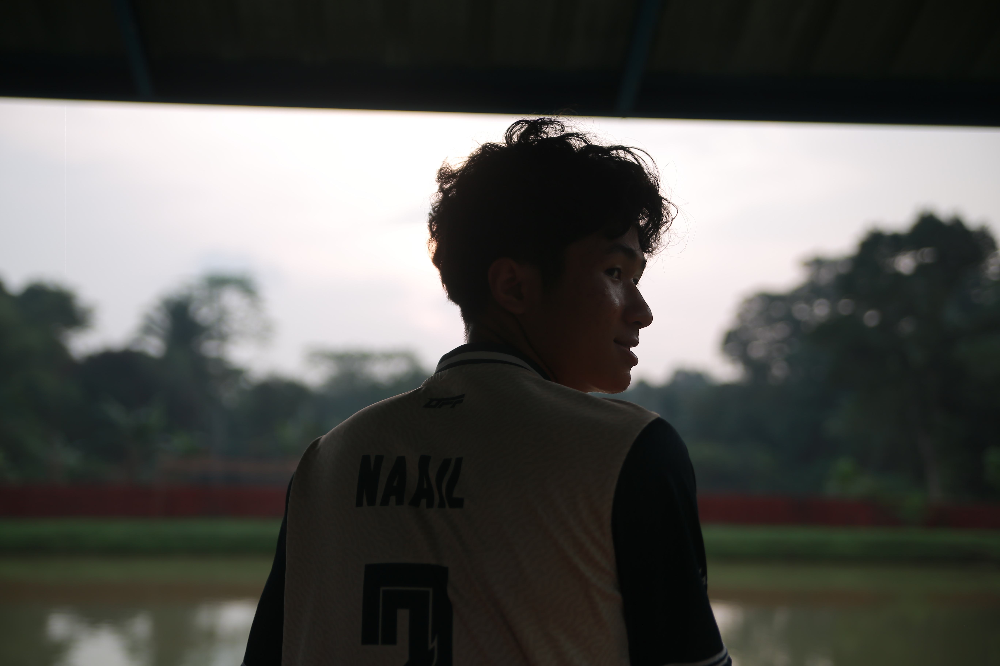
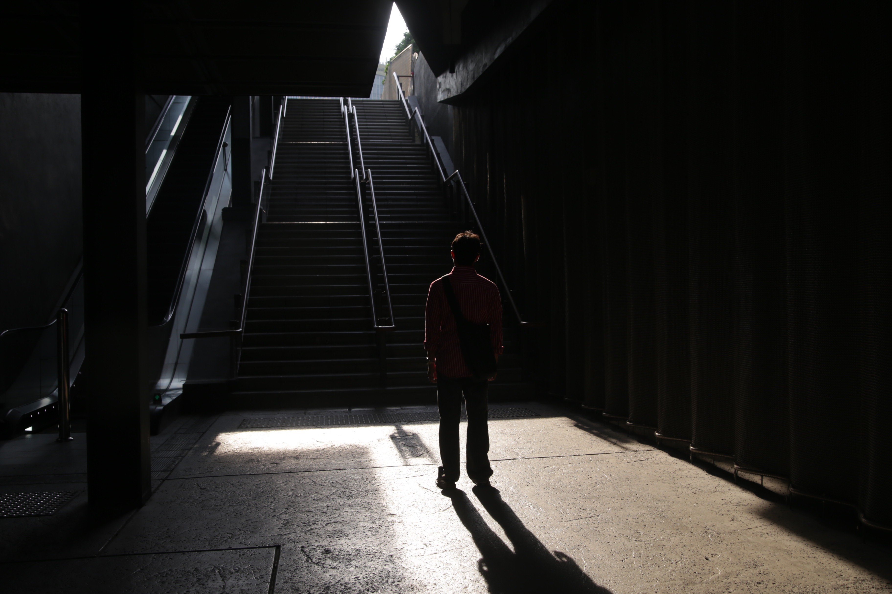
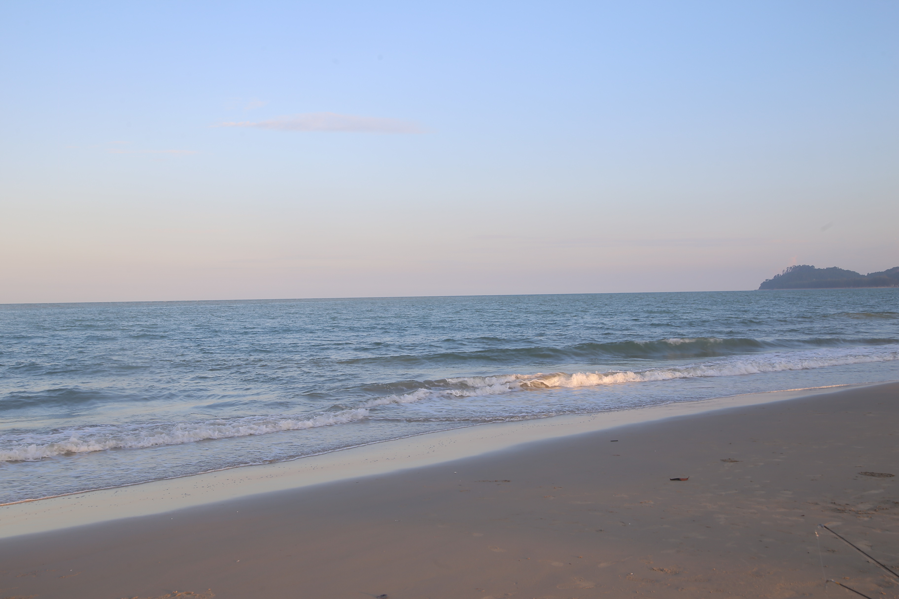
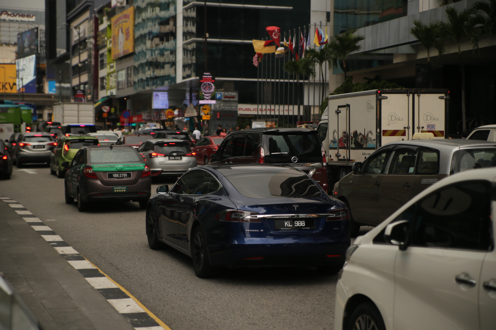

Hi, I'm Iman, a Creative Multimedia student with a strong passion for photography and visual storytelling. I enjoy capturing meaningful moments through my camera and expressing creativity through photos and videos. Photography allows me to see the world from different perspectives while continuously improving my creativity and technical skills.




I'm always open to new opportunities and collaborations. Get in touch with me using the form below or connect with me on social media.